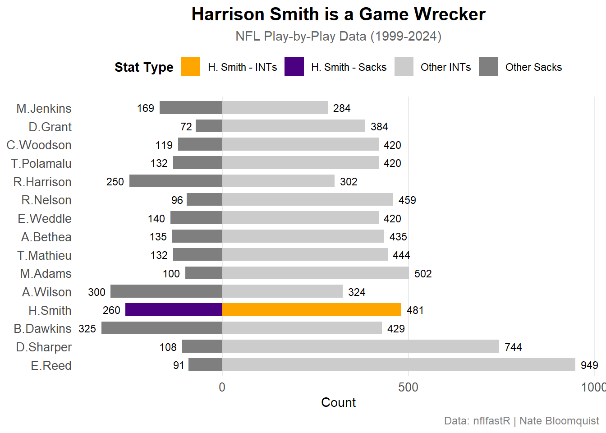

Is Harrison Smith One Of The Top Safetys Of All Time?
Football
NFL
Vikings
Hit Man
Author
Nate Bloomquist
Published
December 4, 2025
For the past 14 seasons, the “Hit Man” Harrison Smith has been a dominant safety and franchise cornerstone for the Minnesota Vikings. Over his career, Smith has developed a reputation of being a cerebral and game-wrecking player. Aaron Rodgers, a future Hall of Fame quarterback and former Green Bay Packer who faced Smith twice a year for 11 seasons, has sang his praises about the safety, saying on the record that he is the most frustrating guy to play against due Smith being a “master of disguise” who is difficult to read and is absolutely a “Hall of Fame player” in his own right. However, even with all of his accolades and success, Smith has rarely been talked about by the media over his career. That brings up two questions, is Smith one of the best safeties of all time? If he is, then why does the media not talk about him?
When it comes to the most important thing a Safety can do in the NFL, the vast majority of people would say it would be to make impact plays and create turnovers. Having the ability to give the ball back to your offense is often the difference in who wins versus who loses.
Code
library(nflreadr)
Warning: package 'nflreadr' was built under R version 4.5.2
Code
library(nflplotR)library(dplyr)
Attaching package: 'dplyr'
The following objects are masked from 'package:stats':
filter, lag
The following objects are masked from 'package:base':
intersect, setdiff, setequal, union
Warning in left_join(filter(pbp, !is.na(sack_player_id), !is.na(sack_player_name)), : Detected an unexpected many-to-many relationship between `x` and `y`.
ℹ Row 1 of `x` matches multiple rows in `y`.
ℹ Row 1468 of `y` matches multiple rows in `x`.
ℹ If a many-to-many relationship is expected, set `relationship =
"many-to-many"` to silence this warning.
Warning in left_join(filter(pbp, interception == 1, !is.na(interception_player_id), : Detected an unexpected many-to-many relationship between `x` and `y`.
ℹ Row 1 of `x` matches multiple rows in `y`.
ℹ Row 537 of `y` matches multiple rows in `x`.
ℹ If a many-to-many relationship is expected, set `relationship =
"many-to-many"` to silence this warning.
Code
safety_stats <-full_join( sacks, ints, by =c("sack_player_name"="interception_player_name")) |>rename(player = sack_player_name) |>replace_na(list(sacks =0, interceptions =0)) |>filter(sacks >0| interceptions >0) |>mutate(is_harrison = player =="H.Smith")top_safeties <- safety_stats |>mutate(total = sacks + interceptions) |>arrange(desc(total)) |>head(15)plot_data <- top_safeties |>pivot_longer(cols =c(sacks, interceptions), names_to ="stat", values_to ="count") |>mutate(stat =factor(stat, levels =c("sacks", "interceptions"), labels =c("Sacks", "Interceptions")),player =reorder(player, -count) )plot_data_butterfly <- plot_data |>mutate(count_signed =ifelse(stat =="Sacks", -count, count),is_harrison = player =="H.Smith",fill_color =case_when( is_harrison & stat =="Sacks"~"Harrison Sacks", is_harrison & stat =="Interceptions"~"Harrison INTs", stat =="Sacks"~"Other Sacks", stat =="Interceptions"~"Other INTs" ) )ggplot(plot_data_butterfly, aes(x = player, y = count_signed, fill = fill_color)) +geom_bar(stat ="identity", width =0.7) +scale_fill_manual(values =c("Harrison Sacks"="#4B0082", "Harrison INTs"="#FFA500","Other Sacks"="gray50", "Other INTs"="#CCCCCC" ),labels =c("Harrison Sacks"="H. Smith - Sacks","Harrison INTs"="H. Smith - INTs") ) +scale_y_continuous(labels = abs) +labs(title ="Harrison Smith is a Game Wrecker",subtitle ="NFL Play-by-Play Data (1999-2024)",x =NULL,y ="Count",fill ="Stat Type",caption ="Data: nflfastR | Nate Bloomquist" ) +coord_flip() +theme_minimal() +theme(plot.title =element_text(face ="bold", size =15, hjust =0.5),plot.subtitle =element_text(size =11, hjust =0.5, color ="gray40"),plot.caption =element_text(size =9, hjust =1, color ="gray50"),axis.text.y =element_text(size =10),axis.text.x =element_text(size =10),legend.position ="top",legend.title =element_text(face ="bold"),panel.grid.major.y =element_blank(),panel.grid.minor =element_blank() ) +geom_text(aes(label =abs(count_signed)), hjust =ifelse(plot_data_butterfly$count_signed <0, 1.3, -0.3), size =3)

According to the chart above, Smith is indeed a big play maker. While he may not be first in either sacks or interceptions, he is still third in sacks and fourth in interceptions. This disproves the idea that some people have that Smith is not a big play maker and is only a consistently good safety who gets the job done. While he may not put up crazy stats every year, he has been able to put up higher than average numbers for a longer than average career. But the question is how consistent has he been? As the saying goes, availability is the best ability, so how often has he been available to make the plays?
One of the real strengths of Harrison Smith is his consistency. Over his career, he has never had a “bad” year. He has always remained the one steady and consistent factor on the Vikings. While it isn’t the PFF ranking that would show a much more clear picture, the consistency of Smiths snaps alone speaks volumes. Since he entered the league in 2011, he has averaged more snaps than the average safety consistently over his entire career. 14 years of above average snaps is nearly unheard of. In a league as physical as the NFL where injuries are a common occurrence, Smith has somehow managed to, for the most part, avoid them.
With his consistent snaps, Smith has also been able to put up consistent stats. While this data is only from 2018-2024, Smith still sits in the top 5 when it comes to tackles made by safeties. Far out of his prime, he is still able to perform at the same level of when he entered the league. The reason Harrison Smith has been able to build a hall of fame career is because of his consistency. While he may not put up 15 interceptions a year, he has been able to put up an impressive performance for 14 years.